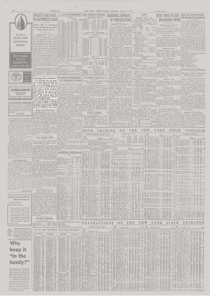

Pittsburgh Coke & Chemical doubles pig iron
The New York Times, financial page, 6 July 1951
On the financial page of Friday, 6 July 1951, the Times carried a short Pittsburgh Coke & Chemical item: a rights offering to pay for construction that would double pig-iron output on Neville Island. That program is the second blast furnace, in service about 1952.
{kind=link}

The PC&C notice:
The Pittsburgh Coke and Chemical Company announced yesterday that it had registered with the Securities and Exchange Commission an issue of 140,243 shares of common stock intended for preferential offering to the company’s stockholders at the rate of one share for each four shares held. The offering is not to be underwritten. The Chemical Bank and Trust Company has been designated as subscription agent. Money raised by the stock sale will be used to finance a construction program intended to increase the output of pig iron from Neville Island blast furnaces from 300,000 net tons to 600,000 net tons a year.
Announcement dated 5 July 1951. Capacity: 300,000 net tons a year before the program, 600,000 after — a second furnace of similar size. More iron also meant more slag for Green Bag cement and more coke-oven gas for the chemical plant.